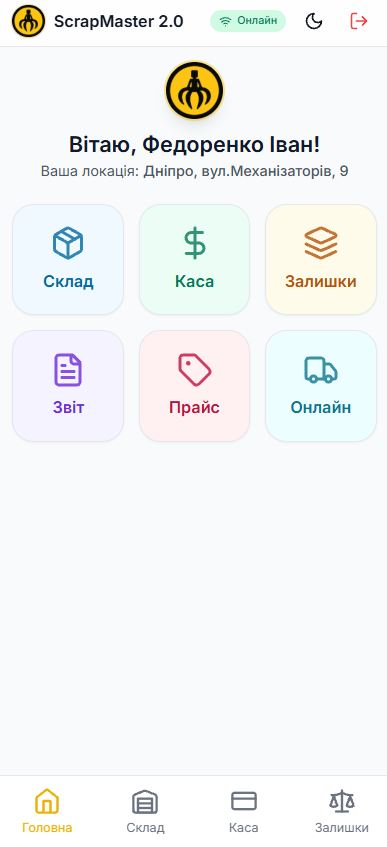
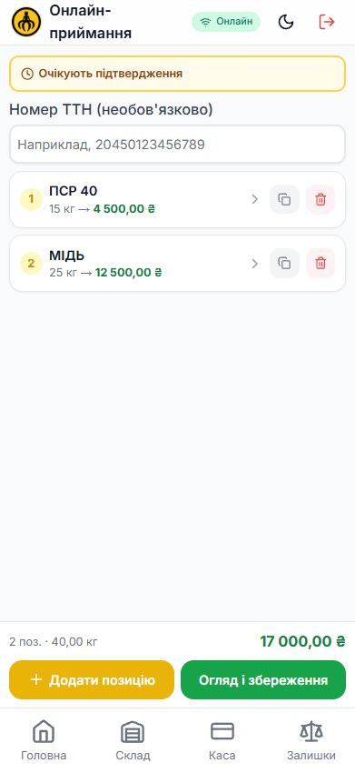
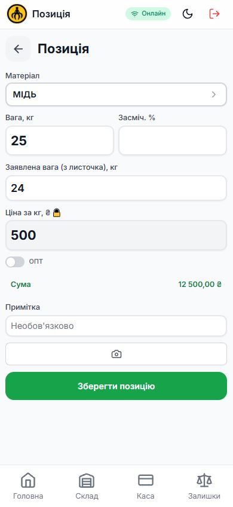
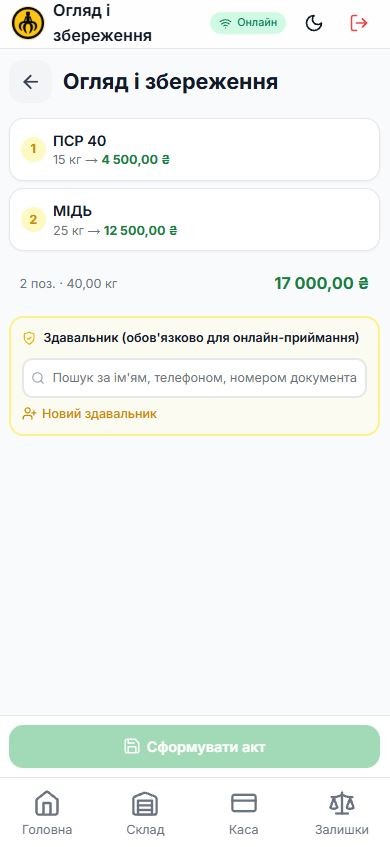
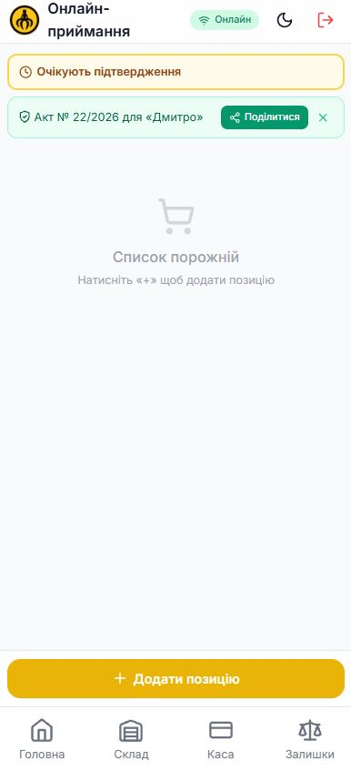
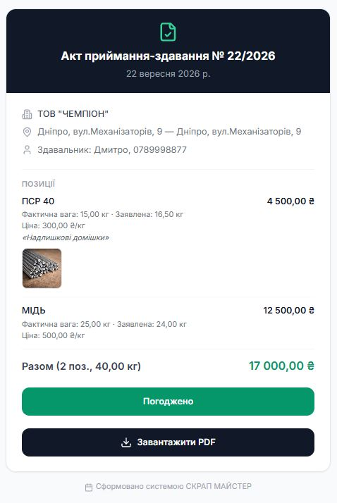
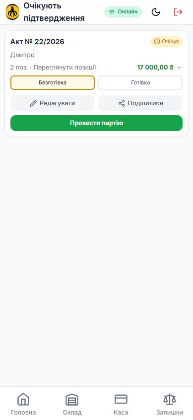
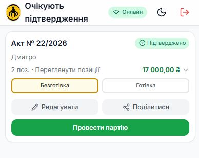
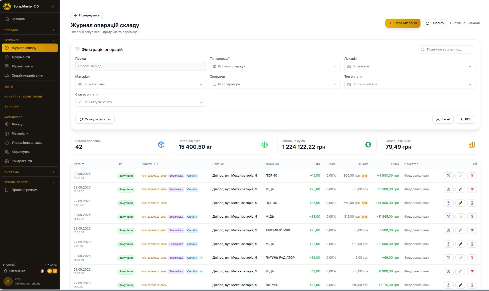

Модуль «Онлайн-приймання» дозволяє прийняти посилку з металом від здавальника, якого немає на пункті, — зважити вміст, порівняти з заявленим у листочку, показати здавальнику акт онлайн і отримати підтвердження ще до того, як гроші підуть.
Здавальник живе в іншому місті й ніколи не доїде до вашого пункту особисто? Багато точок прийому вже працюють через Нову Пошту, Укрпошту чи Delivery — клієнт пакує метал, пише на листочку, що й скільки він вкладає, і надсилає. Питання в тому, як зробити цей процес чесним і задокументованим для обох сторін.
| Що важливо | Без модуля | З модулем «Онлайн-приймання» |
|---|---|---|
| Географія клієнтів | Тільки хто фізично доїде ✗ | Будь-яка область України ✓ |
| Заявлена і фактична вага | На слово, по телефону ✗ | Зважено і зафіксовано поруч ✓ |
| Підтвердження здавальника | Неможливо без зустрічі ✗ | Онлайн, за посиланням, з телефону ✓ |
| Ризик спірної ситуації | Здавальник далеко, довіряй на слово ✗ | Здавальник бачить факт до розрахунку ✓ |
| Облік на складі й у касі | Окремий, ризик розбіжностей ✗ | Той самий перевірений процес ✓ |
Той самий перевірений wizard приймання, що й завжди, — плюс кілька речей, які з'являються тільки для онлайн-приймання.
Окреме поле на кожній позиції — те, що здавальник написав на листочку. Довідкова інформація для акту, ніколи не бере участі в розрахунках.
Просте текстове поле для номера накладної — Нова Пошта, Укрпошта чи Delivery, без прив'язки до конкретного перевізника.
Акт з позиціями, фото й сумою формується одразу, ще до того, як товар потрапить на склад, — здавальник встигає його переглянути.
Кнопка «Погоджено» на публічній сторінці акту — без живого підпису, адже здавальника немає на місці фізично.
Окремий екран для оператора: усі сформовані акти, статус підтвердження, кнопка «Провести партію».
Помилились у вазі чи ціні? Акт можна відредагувати, поки партія ще не проведена, — здавальнику надсилається оновлена версія на підтвердження.
Ніякого окремого процесу для онлайн-приймання не потрібно вивчати — це той самий wizard, яким оператор уже користується щодня, лише з новим стартовим пунктом і кількома додатковими екранами.
1Онлайн-приймання — окрема плитка на головному екрані. З'являється лише коли модуль увімкнено для тенанта, поруч зі Складом, Касою, Залишками.

Плитка «Онлайн» на головному екрані2Оператор розкриває посилку й додає позиції. Номер ТТН — необов'язкове поле зверху; кнопка «Очікують підтвердження» одразу показує, скільки актів ще чекають на дію.

Список позицій і номер ТТН3На кожній позиції — заявлена вага поруч із фактичною. Заявлена вага береться з листочка в посилці й потрібна лише для порівняння в акті — розрахунки завжди йдуть від фактичної.

Фактична й заявлена вага поруч4Огляд — здавальник обов'язковий. На відміну від звичайної закупівлі, для онлайн-приймання дані здавальника потрібні завжди: саме йому піде акт на підтвердження.

Огляд і кнопка «Сформувати акт»5Акт сформовано — партія ще не на складі. Оператор ділиться посиланням зі здавальником (Telegram, SMS, Viber) прямо з банера й одразу бачить, скільки таких актів ще очікують.

Акт № 22/2026 сформовано6Здавальник переглядає акт і тисне «Погоджено». Публічна сторінка без логіну: позиції, фактична й заявлена вага, ціна, сума, фото — і кнопка підтвердження, видима лише поки партія ще не проведена.

Погляд здавальника — акт з фото позиційЕкран «Очікують підтвердження» показує статус кожного акту в реальному часі. Підтвердження — м'яка рекомендація, а не хардблок: оператор може провести партію й без нього, якщо впевнений.

Щойно сформований акт — статус «Очікує»
Здавальник підтвердив — статус «Підтверджено»Оператор обирає спосіб оплати (готівка чи безготівка) і тисне «Провести партію» — склад і каса оновлюються тим самим, уже перевіреним шляхом, що й для звичайної закупівлі.
Проведена онлайн-партія одразу видна в загальному журналі складу — з окремою позначкою, незалежно від способу оплати.

Журнал складу — бейдж «Онлайн» і пункт меню «Онлайн-приймання»Не обмежуєтесь тими, хто фізично доїде до пункту, — приймаєте метал звідусіль, де працює поштова служба.
Здавальник бачить фактичну вагу й підсумок до того, як гроші підуть, — менше приводів для непорозумінь після оплати.
Онлайн-приймання не створює паралельної системи — це та сама партія на складі й у касі, з тими самими звітами.
Модуль «Онлайн-приймання» вмикається для Вас окремо — разом з іншими модулями, як-от безготівкові розрахунки, або самостійно.
Переглянути всі модулі ScrapMaster →Модуль вмикається для Вас окремо — спробуйте на одному пункті прийому чи запросіть демонстрацію.